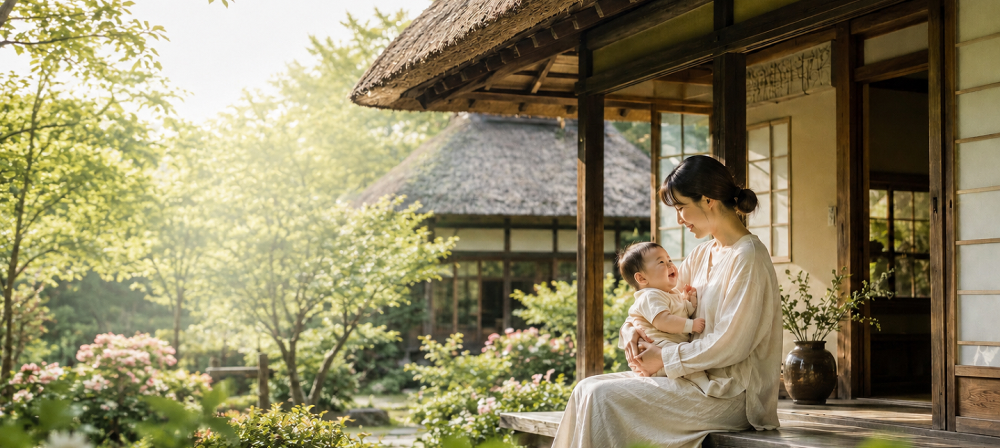
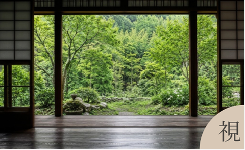
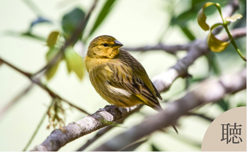
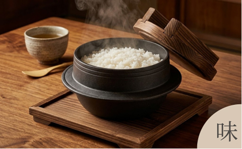
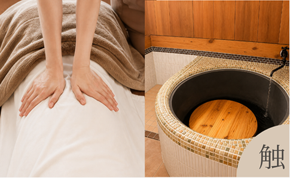
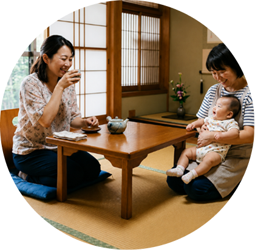
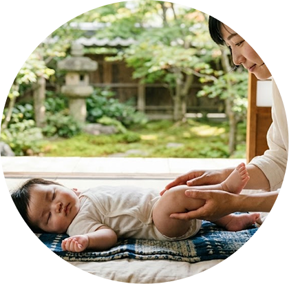
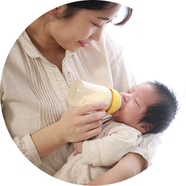
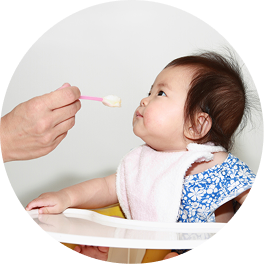

五感をほどく、母と赤ちゃんのための時間
頑張り続ける毎日から少し離れて深く休むことを思い出す場所。
木の香りや自然光に包まれながら、実家に帰ってきたような
安心感を感じられる空間です。
穏やかな時間を取り戻す、第二の実家
GOKAN産後ケアホテルは、産後のママと赤ちゃんが安心して過ごせる
古民家の産後ケア施設です。
1日3組限定の少人数制だからこそ、一人ひとりの気持ちや悩みに寄り添いながら
助産師による専門的なサポートをご提供します。
また、アロマ資格をもつスタッフによる香りケアと整体を取り入れ
心地よい香りに包まれながら心と身体をやさしく整える時間をお届けします。
自然の景色や木の香り、旬の食材を使ったお食事など、
五感で癒される環境の中で、ゆったりとお過ごしください。
五感で整える産後ケア
-

四季折々の自然や庭の風景
窓から差し込むやさしい光、季節ごとに表情を変える
庭の景色や自然を眺めながらゆったりと過ごせます。 -

鳥のさえずりや風の音
自然の音に包まれることで、日常の騒音から解放され
心が穏やかに整っていきます。 -
アロマや木の香り
アロマの香りに包まれながら受ける整体で産後の疲れを
やさしくほぐし、五右衛門風呂では薪の香りに包まれながら
心ほどけるひとときをお楽しみいただけます。 -

地元産のお米や旬の食材
地元産のお米や旬の食材を使い、栄養バランスを考え
やさしい味わいで産後の身体を労るお食事を提供します。 -

整体・五右衛門風呂の温もり
昔ながらの方法で薪に火をつけ、お湯を沸かしています。
ゆらめく炎や薪の香りを感じながら身体の芯まで
じんわりと温まる特別な時間をお過ごしいただけます。
選べる2つのプラン
ライフスタイルで選べるプランをご用意しています。
サポート内容
授乳相談
授乳方法や母乳の お悩み、不安など 一人ひとりに 寄り添いながら サポートします。
育児相談
育児のへの不安や 悩みを気軽に 相談できる環境を 整えています。

母子
サポート
助産師が責任を 持ってお子様を 見守りますので、 その間お母様は 安心してゆっくり お休みいただけます
アロマ整体
その日の気分や 体調に合わせて好きな アロマを選択し心地よい 香りに包まれながら30分の整体を受けられる。

ベビー
マッサージ
赤ちゃんとのふれあいを深めながら、 親子のコミュニケーションを育みます。 赤ちゃんのリラックスだけでなく、 お母さん自身の心のゆとりにも つながります。
お客様の声

27歳・初めて出産・宿泊利用
育児していると出てくる様々な悩みも
その都度助産師さんに相談させてもらい
解消することができ、とても心強かったです。
もし第二子を授かることがあれば、
またぜひお世話になりたいです！
34歳・初めて出産・宿泊利用
とても静かな場所で、ゆっくり過ごすことが
できました。
母乳の相談をしたり、
他の方ともお話をすることができ
利用して良かったです。

37歳・2人目・日帰り利用
上の子の育児があり宿泊は難しい為
日帰りを利用しました。
限られた時間でも 美味しい食事や
癒しの時間が取れてとても良かったです。
また明日からも頑張れます！